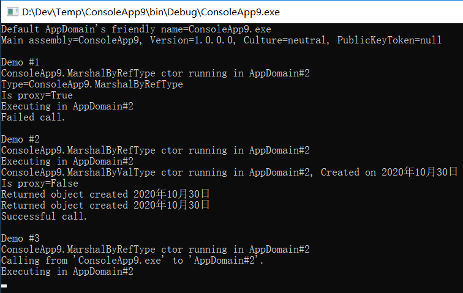

AppDomain
作者：追风剑情 发布于：2020-10-29 9:19 分类：C#
CLR COM服务器初始化时会创建一个AppDomain。AppDomain是一组程序集的逻辑容器。CLR初始化时创建的第一个AppDomain称为“默认AppDomain”，这个默认的AppDomain只有在Windows进程终止时才会被销毁。
除了默认AppDomain，正在使用非托管COM接口方法或托管类型方法的宿主还可以要求CLR创建额外的AppDomain。AppDomain是为了提供隔离而设计的。下面总结了AppDomain的具体功能：
- 一个AppDomain的代码不能直接访问另一个AppDomain的代码创建的对象
- 一个AppDomain中的代码创建了一个对象后，该对象便被该AppDomain“拥有”。换言之，它的生存期不能超过创建它的代码所在的AppDomain。一个AppDomain中的代码要访问另一个AppDomain中的对象，只能使用“按引用封送”(marshal-by-reference)或者"按值封送"(marshal-by-value)的语义。这就强制建立了清晰的分隔和边界，因为一个AppDomain中的代码不能直接引用另一个AppDomain中的代码创建的对象。这种隔离使AppDomain能很容易地从进程中卸载，不会影响其他AppDomain正在运行的代码。
- AppDomain可以卸载
- CLR不支持从AppDomain中卸载特定的程序集。但可以告诉CLR卸载一个AppDomain，从而卸载该AppDomain当前包含的所有程序集。
- AppDomain可以单独保护
- AppDomain创建后会应用一个权限集，它决定了向这个AppDomain中运行的程序集授予的最大权限。正是由于存在这些权限，所以当宿主加载一些代码后，可以保证这些代码不会破坏(或读取)宿主本身使用的一些重要数据结构。
- AppDomain可以单独配置
- AppDomain创建后会关联一组配置设置。这些设置主要影响CLR在AppDomain中加载程序集的方式。涉及搜索路径、版本绑定重定向、卷影复制以及加载器优化。
下图演示了一个Windows进程， 其中运行着一个CLR COM服务器。该CLR当前管理着两个AppDomain(虽然在一个Windows进程中可以运行的AppDomain数量没有硬性限制)。每个AppDomain都有自己的Loader堆，每个Loader堆都记录了自AppDomain创建以来已访问过哪些类型。Loader堆中的每个类型对象都有一个方法表，方法表中的每个记录项都指向JIT编译的本机代码（前提是方法至少执行过一次）。除此之外，每个AppDomain都加载了一些程序集。AppDomain #1(默认AppDomain)有三个程序集：MyApp.exe，TypeLib.dll和System.dll。AppDomain #2有两个程序集：Wintellect.dll和System.dll。
如上图所示，两个AppDomain都加载了System.dll程序集。如果这两个AppDomain都使用了来自System.dll的一个类型，那么两个AppDomain的Loader堆会为相同的类型分别分配一个类型对象；类型对象的内存不会由两个AppDomain共享。另外，一个AppDomain中的代码调用一个类型定义的方法时，方法的IL代码会进行JIT编译，生成的本机代码单独与每个AppDomain关联，而不是由调用它的所有AppDomain共享。
不共享类型对象的内存或本机代码显得有些浪费。但AppDomain的设计宗旨就是提供隔离；CLR要求在卸载某个AppDomain并释放其所有资源时不会影响到其他任何AppDomain。复制CLR的数据结构才能保证这一点。另外，还保证多个AppDomain使用的类型在每个AppDomain中都有一组静态字段。
有的程序集本来就要由多个AppDomain使用。最典型的例子就是MSCorLib.dll。该程序集包含了System.Object,System.Int32以及其他所有与.NET Framework密不可分的类型。CLR初始化时，该程序集会自动加载，而且所有AppDomain都共享该程序集中的类型。为了减少资源消耗，MSCorLib.dll程序集以一种"AppDomain中立"的方式加载。也就是说，针对以“AppDomain中立”的方式加载的程序集，CLR会为它们维护一个特殊的Loader堆。该Loader堆中的所有类型对象，以及为这些类型定义的方法JIT编译生成的所有本机代码，都会由进程中的所有AppDomain共享。遗憾的是，共享这些资源所获得的收益并不是没有代价的。这个代价就是，以“AppDomain中立”的方式加载的所有程序集永远不能卸载。要回收它们占用的资源，唯一的办法就是终止Windows进程，让Windows去回收资源。
一个AppDomain中的代码可以和另一个AppDomain中的类型和对象通信，但只能通过良好定义的机制进行。下面的示例程序演示了如何创建新AppDomain，在其中加载程序集并构造该程序集定义的类型的实例。代码演示了以下三种类型在构造时的不同行为：“按引用封送”(Marshal-by-Reference)类型，“按值封送”(Marshal-by-Value)类型，以及完全不能封送的类型。代码还演示了创建它们的AppDomain卸载时这些对象的不同行为。
using System;
using System.Security.Permissions;
using System.Runtime.Serialization;
using System.Reflection;
using System.Threading;
using System.Runtime.Remoting;
namespace ConsoleApp9
{
class Program
{
static void Main(string[] args)
{
Marshalling();
Console.Read();
}
private static void Marshalling()
{
// 获取AppDomain引用("调用线程"当前正在该AppDomain中执行)
AppDomain adCallingThreadDomain = Thread.GetDomain();
// 每个AppDomain都分配了友好字符串名称(以便调式)
// 获取这个AppDomain的友好字符串名称并显示它
String callingDomainName = adCallingThreadDomain.FriendlyName;
Console.WriteLine("Default AppDomain's friendly name={0}", callingDomainName);
// 获取并显示我们的AppDomain中包含了"Main"方法的程序集
String exeAssembly = Assembly.GetEntryAssembly().FullName;
Console.WriteLine("Main assembly={0}", exeAssembly);
// 定义局部变量来引用一个AppDomain
AppDomain ad2 = null;
// *** DEMO 1: 使用Marshal-by-Reference进行跨AppDomain通信 ***
Console.WriteLine("{0}Demo #1", Environment.NewLine);
// 新建一个AppDomain(从当前AppDomain继承安全性和配置)
ad2 = AppDomain.CreateDomain("AppDomain#2", null, null);
MarshalByRefType mbrt = null;
// 将我们的程序集加载到新AppDomain中，构造一个对象，把它
// 封送回我们的AppDomain(实际得到对一个代理的引用)
mbrt = (MarshalByRefType)ad2.CreateInstanceAndUnwrap(exeAssembly, "ConsoleApp9.MarshalByRefType");
Console.WriteLine("Type={0}", mbrt.GetType());// CLR在类型上撒谎了
// 证明得到的是对一个代理对象的引用
Console.WriteLine("Is proxy={0}", RemotingServices.IsTransparentProxy(mbrt));
// 看起来像是MarshalByRefType上调用一个方法，实则不然、
// 我们是在代理类型上调用一个方法，代理使线程切换到拥有对象的
// 那个AppDomain，并在真实的对象上调用这个方法
mbrt.SomeMethod();
// 卸载新的AppDomain
AppDomain.Unload(ad2);
// mbrt引用一个有效的代理对象；代理对象引用一个无效的AppDomain
try
{
// 在代理类型上调用一个方法。AppDomain无效，造成抛出异常
mbrt.SomeMethod();
Console.WriteLine("Successful call.");
}
catch(AppDomainUnloadedException)
{
Console.WriteLine("Failed call.");
}
// *** DEMO 2: 使用Marshal-by-Value进行跨AppDomain通信 ***
Console.WriteLine("{0}Demo #2", Environment.NewLine);
// 新建一个AppDomain(从当前AppDomain继承安全性和配置)
ad2 = AppDomain.CreateDomain("AppDomain#2", null, null);
// 将我们的程序集加载到新AppDomain中，构造一个对象，把它
// 封送回我们的AppDomain(实际得到对一个代理的引用)
mbrt = (MarshalByRefType)ad2.CreateInstanceAndUnwrap(exeAssembly, "ConsoleApp9.MarshalByRefType");
// 对象的方法返回所返回对象的副本
// 对象按值(而非按引用)封送
MarshalByValType mbvt = mbrt.MethodWithReturn();
// 证明得到的不是对一个代理对象的引用
Console.WriteLine("Is proxy={0}", RemotingServices.IsTransparentProxy(mbvt));
// 看起来是在MarshalByValType上调用一个方法，实际也是如此
Console.WriteLine("Returned object created " + mbvt.ToString());
// 卸载新的AppDomain
AppDomain.Unload(ad2);
// mbvt引用有效的对象；卸载AppDomain没有影响
try
{
// 我们是在对象上调用一个方法；不会抛出异常
Console.WriteLine("Returned object created " + mbvt.ToString());
Console.WriteLine("Successful call.");
}
catch(AppDomainUnloadedException)
{
Console.WriteLine("Failed call.");
}
// *** DEMO 3: 使用不可封送的类型进行跨AppDomain通信 ***
Console.WriteLine("{0}Demo #3", Environment.NewLine);
// 新建一个AppDomain(从当前AppDomain继承安全性和配置)
ad2 = AppDomain.CreateDomain("AppDomain#2", null, null);
// 将我们的程序集加载到新AppDomain中，构造一个对象，把它
// 封送回我们的AppDomain(实际得到对一个代理的引用)
mbrt = (MarshalByRefType)ad2.CreateInstanceAndUnwrap(exeAssembly, "ConsoleApp9.MarshalByRefType");
// 对象的方法返回一个不可封送的对象；抛出异常
NonMarshalableType nmt = mbrt.MethodArgAndReturn(callingDomainName);
// 这里永远执行不到...
}
}
// 该类的实例可跨越AppDomain的边界“按引用封送”
public sealed class MarshalByRefType : MarshalByRefObject
{
public MarshalByRefType()
{
Console.WriteLine("{0} ctor running in {1}",
this.GetType().ToString(), Thread.GetDomain().FriendlyName);
}
public void SomeMethod()
{
Console.WriteLine("Executing in " + Thread.GetDomain().FriendlyName);
}
public MarshalByValType MethodWithReturn()
{
Console.WriteLine("Executing in "+ Thread.GetDomain().FriendlyName);
MarshalByValType t = new MarshalByValType();
return t;
}
public NonMarshalableType MethodArgAndReturn(String callingDomainName)
{
// 注意：callingDomainName是可序列化的
Console.WriteLine("Calling from '{0}' to '{1}'.",
callingDomainName, Thread.GetDomain().FriendlyName);
NonMarshalableType t = new NonMarshalableType();
return t;
}
}
// 该类的实例可跨越AppDomain的边界“按值封送”
[Serializable]
public sealed class MarshalByValType : Object
{
// 注意：DateTime是可序列化的
private DateTime m_creationTime = DateTime.Now;
public MarshalByValType()
{
Console.WriteLine("{0} ctor running in {1}, Created on {2:D}",
this.GetType().ToString(),
Thread.GetDomain().FriendlyName,
m_creationTime);
}
public override string ToString()
{
return m_creationTime.ToLongDateString();
}
}
// 该类的实例不能跨AppDomain边界进行封送
// [Serializable]
public sealed class NonMarshalableType : Object
{
public NonMarshalableType()
{
Console.WriteLine("Executing in " + Thread.GetDomain().FriendlyName);
}
}
}
运行结果

现在来讨论下以上代码以及CLR所做的事情。
Marshalling方法首先获得一个AppDomain对象引用，当前调用线程正在该AppDomain中执行。在Windows中，线程总是在一个进程的上下文中创建，而且线程的整个生存期都在该进程的生存期内。但线程和AppDomain没有一对一关系。AppDomain是一项CLR功能；Windows对AppDomain一无所知。由于一个Windows进程可包含多个AppDomain，所以线程能执行一个AppDomain中的代码，再执行另一个AppDomain中的代码。从CLR的角度看，线程一次只能执行一个AppDomain中的代码。线程可调用System.Threading.Thread的静态方法GetDomain向CLR询问它正在哪个AppDomain中执行。线程还可查询System.AppDomain的静态只读属性CurrentDomain获得相同的信息。
AppDomain创建后可被赋予一个友好名称。它是用于标识AppDomain的一个String。友好名称主要是为了方便调试。由于CLR要在我们的任何代码执行前创建默认AppDomain，所以使用可执行文件的文件名作为默认的AppDomain友好名称。Marshalling方法使用System.AppDomain的只读FriendlyName属性来查询默认AppDomain的友好名称。
接着，Marshalling方法查询默认AppDomain中加载的程序集的强命名标识，这个程序集定义了入口方法Main(其中调用了Marshalling)。程序集定义了几个类型：Program，MarshalByRefType，MarshalByValType和NonMarshallableType。现在已准备好研究上面的三个演示(Demo)，它们本质上很相似。
演示 1： 使用“按引用封送”进行跨AppDomain通信
演示1调用System.AppDomain的静态CreateDomain方法指示CLR在同一个Windows进程中创建一个新AppDomain。AppDomain类型提供了CreateDomain方法的多个重载版本。建议仔细研究一下它们，并在新建AppDomain时选择最合适的一个。本例使用的CreateDomain接受以下三个参数：
● 代表新AppDomain的友好名称的一个String。
● 一个System.Security.Policy.Evidence,是CLR用于计算AppDomain权限集的证据。本例为该参数传递null，造成新AppDomain从创建它的AppDomain继承权限集。通常，如果希望围绕AppDomain中的代码创建安全边界，可构造一个System.Security.PermissionSet对象，在其中添加希望的权限对象（实现了IPermission接口的类型的实例），将得到的PermissionSet对象引用传给接受一个PermissionSet的CreateDomain方法重载。
● 一个System.AppDomainSetup，代表CLR为新AppDomain使用的配置设置。同样，本例为该参数传递null，使新AppDomain从创建它的AppDomain继承配置设置。如果希望对新AppDomain进行特殊配置，可构造一个AppDomainSetup对象，将它的各种属性(例如配置文件的名称)设为你希望的值，然后将得到的AppDomainSetup对象引用传给CreateDomain方法。
CreateDomain方法内部会在进程中新建一个AppDomain,该AppDomain将被赋予指定的好友名称、安全性和配置设置。新AppDomaine有自己的Loader堆，这个堆目前是空的，因为还没有程序集加载到新AppDomain中。创建AppDomain时，CLR不在这个AppDomain中创建任何线程；AppDomain中也不会运行代码，除非显式地让一个线程调用AppDomain中的代码。
现在，要在新AppDomain中创建类型的实例，首先要将程序集加载到新AppDomain中，然后构造程序集中定义的类型的实例。这就是AppDomain的公共实例方法CreateInstanceAndUnwrap所做的事情。调用这个方法时我传递了两个String实参：第一个标识了想在新AppDomain(ad2变量引用的那个AppDomain)中加载的程序集；第二个标识了想构建其实例的那个类型的名称("MarshalByRefType")。在内部，CreateInstanceAndUnwrap方法导致调用线程从当前AppDomain切换新AppDomain。现在，线程(当前正在调用CreateInstanceAndUnwrap)将指定程序集加载到新AppDomain中，并扫描程序集的类型定义元数据表，查找指定类型("MarshalByRefType")。找到类型后，线程调用MarshalByRefType的无参构造器。现在，线程又切换回默认AppDomain，使CreateInstanceAndUnwrap能返回对新MarshalByRefType对象的引用。
所有这一切听起来都很美好，但还有一个问题：CLR不允许一个AppDomain中的变量(根)引用另一个AppDomain中创建的对象。如果CreateInstanceAndUnwrap直接返回对象引用，隔离性就会被打破，而隔离是AppDomain的全部目的！因此，CreateInstanceAndUnwrap在返回对象引用前要执行一些额外的逻辑。
我们的MarshalByRefType类型从一个很特别的基类System.MarshalByRefObject派生。当CreateInstanceAndUnwrap发现它封送的一个对象的类型派生自MarshalByRefObject时，CLR就会跨AppDomain边界按引用封送对象。下面讲述了按引用将对象从一个AppDomain(源AppDomain，这是真正创建对象的地方)封送到另一个AppDomain(目标AppDomain，这是调用CreateInstanceAndUnwrap的地方)的具体含义。
源AppDomain想向目标AppDomain发送或返回对象引用时，CLR会在目标AppDomain的Loader堆中定义一个代理类型。代理类型是用原始类型的元数据定义的。所以，它看起来和原始类型完全一样；有完全一样的实例成员（属性、事件和方法）。但是，实例字段不会成为（代理）类型的一部分，代理类型确实定义了几个(自己的)实例字段，但这些字段和原始类型的不一致。相反，这些字段只是指出哪个AppDomain"拥有"真实的对象，以及如何在拥有(对象的)AppDomain中找到真实的对象。（在内部，代理对象用一个GCHandle实例引用真实的对象。）
在目标AppDomain中定义好这个代理类型之后，CreateInstanceAndUnwrap方法就会创建代理类型的实例，初始化它的字段来标识源AppDomain和真实对象，然后将对这个代理对象的引用返回给目标AppDomain。在上面的示例中，mbrt变量被设为引用这个代理。注意，从CreateInstanceAndUnwrap方法返回的对象实际不是MarshalByRefType类型的实例。CLR一般不允许将一个类型的对象转换成不兼容的类型。但在当前这种情况下，CLR允许转型，因为新类型具有和原始类型一样的实例成员。事实上，用代理对象调用GetType，它会向你撒谎，说自己是一个MarshalByRefType对象。
但可以证明从CreateInstanceAndUnwrap返回的对象实际是对代理的引用。为此，应用程序调用了System.Runtime.Remoting.RemotingService的公共静态IsTransparentProxy方法并向其传递CreateInstanceAndUnwrap方法返回的引用。从输出结果可知，IsTransparentProxy方法返回true，证明返回的是代理。
接着，应用程序使用代理调用SomeMethod方法。由于mbrt变量引用代理对象，所以会调用由代理实现的SomeMethod。代理的实现利用代理对象中的信息字段，将调用线程从默认AppDomain切换至新AppDomain。现在，该线程的任何行动都在新AppDomain的安全策略和配置设置下运行。线程接着使用代理对象的GCHandle字段查找新AppDomain中的真实对象，并用真实对象调用真实的SomeMethod方法。
有两个办法可证明调用线程已从默认AppDomain切换至新AppDomain。首先，我在SomeMethod方法中调用了Thread.GetDomain().FriendlyName。这将返回"AD #2",这是由于线程当前在新AppDomain中运行，而这个新AppDomain是通过调用AppDomain.CreateDomain方法，并传递"AD #2"作为友好名称参数来创建的。其次，在调试器中逐语句调试代码，并打开了“调用堆栈”窗口，那么“[外部代码]”行会标注一个线程在什么位置跨越AppDomain边界。
真实的SomeMethod方法返回后，会返回至代理的SomeMethod方法，后都将线程切换回默认AppDomain。线程继续执行默认AppDomain中的代码。
应用程序接着做的事情是调用AppDomain类的公共静态Unload方法，这会强制CLR卸载指定的AppDomain(包括加载到其中的所有程序集)，并强制执行一次垃圾回收，以释放由卸载的AppDomain中的代码创建的所有对象。这时，默认AppDomain的mbrt变量仍然引用一个有效的代理对象。但代理对象已不再引用一个有效的AppDomain(因为它已经卸载了)。
当默认AppDomain试图使用代理对象调用SomeMethod方法时。调用的是该方法在代理中的实现。代理的实现发现包含真实对象的AppDomain已卸载。所以，代理的SomeMethod方法抛出一个AppDomainUnloadedException异常，告诉调用者操作无法完成。
显然，Microsoft的CLR团队不得不做大量的工作来确保AppDomain的正确隔离，但这是他们必须做的。跨AppDomain访问对象的功能正在被大量地使用，开发人员对这个功能的依赖性正在日益增加。不过，使用“按引用封送”的语义进行跨AppDomain边界的对象访问，会产生一些性能上的开销。所以，一般应尽量少用这个功能。
从MarshalByRefObject派生的类型可定义实例字段。但这些实例字段不会成为代理类型的一部分，也不会包含在代理对象中。写代码对派生自MarshalByRefObject的类型的实例字段进行读写时，JIT编译器会自动生成代码，分别调用System.Object的FieldGetter方法(用于读)或FieldSetter方法(用于写)来使用代理对象(以找到真正的AppDomain/对象)。这些方法是私有的，而且没有在文档中记录。简单地说，这些方法利用反射机制获取或设置字段值。因此，虽然能访问派生自MarshalByRefObject的一个类型中的字段，但性能很差，因为CLR最终要调用方法来执行字段访问。事实上，即使要访问的字段在你自己的AppDomain中，性能也好不到哪里去。（如果CLR要求所有字段都必须私有(为了获得好的数据封装，我强烈建议这样做)，那么FieldGetter和FieldSetter方法根本没有存在地必要，从方法中总是能够直接访问字段，避免(因为还要经由中间的getter或setter方法)造成性能损失）。
访问实例字段时的性能测试
using System;
using System.Diagnostics;
namespace ConsoleApp10
{
class Program
{
static void Main(string[] args)
{
FieldAccessTiming();
Console.Read();
}
private static void FieldAccessTiming()
{
const Int32 count = 1000000000;
NonMBRO nonMbro = new NonMBRO();
MBRO mbro = new MBRO();
Stopwatch sw = Stopwatch.StartNew();
for (Int32 c = 0; c < count; c++) nonMbro.x++;
Console.WriteLine("{0}", sw.Elapsed);
sw = Stopwatch.StartNew();
for (Int32 c = 0; c < count; c++) mbro.x++;
Console.WriteLine("{0}", sw.Elapsed);
}
private sealed class NonMBRO : Object { public Int32 x; }
private sealed class MBRO : Object { public Int32 x; }
}
}
从好不好用(usability)的角度说，派生自MarshalByRefObject的类型应该避免定义任何静态成员。这是因为静态成员总是在调用AppDomain的上下文中访问。要切换到哪个AppDomain的信息包含在代理对象中，但调用静态成员时没有代理对象，所以不会发生AppDomain的切换。让类型的静态成员在一个AppDomain中执行，实例成员却在另一个AppDomain中执行，这样的编程模型未免太“丑”了！
由于第二个AppDomain中没有根，所以代理引用的原始对象可以被垃圾回收。这当然不理想。但另一方面，假如将原始对象不确定地(indefinitely)留在内存中，代理可能不再引用它，而原始对象依然存活；这同样不理想。CLR解决这个问题的办法是使用一个“租约管理器”(lease manager)。一个对象的代理创建好之后，CLR保持对象存活5分钟。5分钟内没有通过代理发出调用，对象就会失效，下次垃圾回收会释放它的内存。每发出一次对象的调用，“租约管理器”都会续订对象的租期，保证它在接下来的2分钟内在内存中保持存活。在对象过期后试图通过代理调用它，CLR会抛出System.Runtime.Remoting.RemotingException异常。
默认的5分钟和2分钟租期设定是可以修改的，重写MarshalByRefObject的虚方法InitializeLifetimeService即可。
演示 2：使用“按值封送”进行跨AppDomain通信
演示2和演示1很相似。和演示1一样，演示2也创建了新AppDomain。然后调用CreateInstanceAndUnwrap方法将同一个程序集加载到新建AppDomain中，并在这个新AppDomain中创建MarshalByRefType类型的实例。CLR为这个对象创建代理，mbrt变量(在默认AppDomain中)被初始化成引用这个代理。接着用代理调用MethodWithReturn方法。这个方法是无参的，将在新AppDomain中执行以创建MarshalByValType类型的实例，并将一个对象引用返回给默认AppDomain。
MarshalByValType不从System.MarshalByRefObject派生，所以CLR不能定义一个代理类型并创建代理类型的实例；对象不能按引用跨AppDomain边界进行封送。
但由于MarshalByValType标记了自定义特性[Serializable]，所以MethodWithReturn方法能按值封送对象。下面具体描述了将一个对象按值从一个AppDomain(源AppDomain)封送到另一个AppDomain(目标AppDomain)的含义。
源AppDomain想向目标AppDomain发送或返回一个对象引用时，CLR将对象的实例字段序列化成一个字节数组。字节数组从源AppDomain复制到目标AppDomain。然后，CLR在目标AppDomain中反序列化字节数组，这会强制CLR将定义了“被反序列化的类型”的程序集加载到目标AppDomain中(如果尚未加载的话)。接着，CLR创建类型的实例，并利用字节数组中的值初始化对象的字段，使之与源对象中的值相同。换言之，CLR在目标AppDomain中精确复制了源对象。然后，MethodWithReturn方法返回对这个副本的引用；这样一来，对象就跨AppDomain的边界按值封送了。
至此，源AppDomain中的对象和目标AppDomain中的对象就有了独立的生存期，它们的状态也可以独立地更改。如果源AppDomain中没有根保持源对象存活，源对象的内存就会在下次垃圾回收时被回收。
为了证明MethodWithReturn方法返回的不是对代理对象的引用，程序调用了System.Runtime.Remoting.RemotingService的公共静态IsTransparentProxy方法，将MethodWithReturn方法返回的引用作为参数传给它。IsTransparentProxy方法返回false，表明对象是一个真实的对象，不是代理。
现在，程序使用真实的对象调用ToString方法。由于mbvt变量引用真实的对象，所以会调用这个方法的真实实现，线程不会在AppDomain之间切换。为了证明这一点，可查看调试器的“调用堆栈”窗口，它没有显示一个“[外部代码]”行。
为了进一步证实没有涉及代理，程序卸载了AppDomain，然后尝试再次调用ToString。和演示1不一样，这次调用会成功，因为卸载新AppDomain对默认AppDomain“拥有”的对象(其中包括按值封送的对象)没有影响。
演示 3：使用不可封送的类型跨AppDomain通信
演示3的开始部分与演示1和2相似，都是新建AppDomain，调用CreateInstanceAndUnwrap方法将相同的程序集加载到新AppDomain中，在新AppDomain中创建一个MarshalByRefType对象，并让mbrt引用该对象。
然后，用代理调用接受一个实参的MethodArgAndReturn方法。同样地，CLR必须保持AppDomain的隔离，所以不能直接将对实参的引用传给新AppDomain。如果对象的类型派生自MarshalByRefObject，CLR会为它创建代理并按引用封送。如果对象的类型用[Serializable]进行了标记，CLR会将对象(及其子)序列化成一个字节数组，将字节数组封送到新AppDomain中，再将字节数组反序列化成对象图，将对象图的根传给MethodArgAndReturn方法。
在这个特定的例子中，跨越AppDomain边界传递一个System.String对象。System.String类型不是从MarshalByRefObject派生的，所以CLR不能创建代理。幸好，System.String被标记为[Serializable]，所以CLR能按值封送它，使代码能正常工作。注意，对于String对象，CLR会采取特殊的优化措施。跨越AppDomain边界封送一个String对象时，CLR只是跨越边界传递对String对象的引用；不会真的生成String对象的副本。之所以能提供这个优化，是因为String对象是不可变的；所以，一个AppDomain中的代码不可能破坏String对象的字段。(顺便说一句，这正是为什么System.String类是密封类的原因。类不密封，就能定义从String派生的类，并添加自己的字段。如果这样做了，CLR就没有办法确保你的“字符串”类是不可变的)
在MethodArgAndReturn内部，显示传给它的字符串，证明字符串跨越了AppDomain边界。然后，我创建NonMarshalableType类型的实例，并将对这个对象的引用返回至默认AppDomain。由于NonMarshalableType不是从System.MarshalByRefObject派生的，也没有用[Serializable]定制特性进行标记，所以不允许MethodArgAndReturn按引用或按值封送对象——对象完全不能跨越AppDomain边界进行封送！为了报告这个问题，MethodArgAndReturn在默认AppDomain中抛出一个SerializationException异常。由于程序没有捕捉这个异常，所以程序终止。
AppDomain很强大的一个地方就是可以卸载它。卸载AppDomain会导致CLR卸载AppDomain中的所有程序集，还会释放AppDomain的Loader堆。卸载AppDomain的办法是调用AppDomain的静态Unload方法。这导致CLR执行一系列操作来得体地卸载指定的AppDomain。
1. CLR挂起进程中执行过托管代码的所有线程。
2. CLR检查所有线程栈，查看哪些线程正在执行要卸载的AppDomain中的代码，或者哪些线程会在某个时候返回至要卸载的AppDomain。任何栈上有要卸载的AppDomain，CLR都会强迫对应的线程抛出一个ThreadAbortException(同时恢复线程的执行)。这将导致线程展开(unwind)，并执行遇到的所有finally块以清理资源。如果没有代码捕捉ThreadAbortException，它最终会成为未处理的异常，CLR会“吞噬”这个异常；线程会终止，但进程可继续运行。这是很特别的一点，因为对于其他所有未经处理的异常，CLR都会终止进程。
译注：critical execution region，翻译为“关键执行区域”或“临界执行区域”或“临界区”。临界区是指线程终止或未处理异常的影响可能不限于当前任务的区域。相反，非临界区中的终止或失败只对出错的任务有影响。
3. 当第2步发现的所有线程都离开AppDomain后，CLR遍历堆，为引用了“由已卸载的AppDomain创建的对象”的每个代理对象都设置一个标志(flag)。这些代理对象现在知道它们引用的真实对象已经不在了。现在，任何代码在无效的代理对象上调用方法都会抛出一个AppDomainUnloadedException异常。
4. CLR强制垃圾回收，回收由已卸载的AppDomain创建的任何对象的内存。这些对象的Finalize方法被调用，使对象有机会正确清理它们占用的资源。
5. CLR恢复剩余所有线程的执行。调用AppDomain.Unload方法的线程将继续运行；对AppDomain.Unload的调用是同步进行的。
顺便说一句，当一个线程调用AppDomain.Unload方法时，针对要卸载的AppDomain中的线程，CLR会给它们10秒钟的时间离开。10秒钟后，如果调用AppDomain.Unload方法的线程还没有返回,CLR将抛出一个CannotUnloadAppDomainException异常，AppDomain将来可能会、也可能不会卸载。
宿主应用程序可监视AppDomain消耗的资源。有的宿主根据这种信息判断一个AppDomain的内存或CPU消耗是否超过了应有的水准，并强制卸载一个AppDomain。还可利用监视来比较不同算法的资源消耗情况，判断哪一种算法用的资源较少。由于AppDomain监视本身也会产生开销，所以宿主必须将AppDomain的静态MonitoringEnabled属性设为true，从而显式地打开监视。监视一旦打开便不能关闭；将MonitoringEnabled属性设为false会抛出一个ArgumentException异常。
监视打开后，代码可查询AppDomain类提供的以下4个只读属性:
● MonitoringSurvivedProcessMemorySize: 这个Int64静态属性返回由当前CLR实例控制的所有AppDomain使用的字节数。这个数字只保证在上一次垃圾回收时是准确的。
● MonitoringTotalAllocatedMemorySize: 这个Int64实例属性返回特定AppDomain已分配的字节数。这个数字只保证在上一次垃圾回收时是准确的。
● MonitoringSurvivedMemorySize: 这个Int64实例属性返回特定AppDomain当前正在使用的字节数。这个数字只保证在上一次垃圾回收时是准确的。
● MonitoringTotalProcessorTime: 这个TimeSpan实例属性返回特定AppDomain的CPU占用率。
下面这个类演示了如何利用这些属性检查两个时间点之间一个AppDomain发生的变化：
using System;
using System.Diagnostics;
using System.Collections.Generic;
namespace ConsoleApp10
{
class Program
{
static void Main(string[] args)
{
AppDomainResourceMonitoring();
Console.Read();
}
private static void AppDomainResourceMonitoring()
{
using (new AppDomainMonitorDelta(null))
{
//分配在回收时能存活的约10MB
var list = new List<Object>();
for (Int32 x = 0; x < 1000; x++) list.Add(new Byte[10000]);
//分配在回收时存活不了的约20MB
for (Int32 x = 0; x < 2000; x++) new Byte[10000].GetType();
//保持CPU工作约5秒
Int64 stop = Environment.TickCount + 5000;
while (Environment.TickCount < stop) ;
}
}
private sealed class AppDomainMonitorDelta : IDisposable
{
private AppDomain m_appDomain;
private TimeSpan m_thisADCpu;
private Int64 m_thisADMemoryInUse;
private Int64 m_thisADMemoryAllocated;
static AppDomainMonitorDelta()
{
//确定已打开了AppDomain监视
AppDomain.MonitoringIsEnabled = true;
}
public AppDomainMonitorDelta(AppDomain ad)
{
m_appDomain = ad ?? AppDomain.CurrentDomain;
m_thisADCpu = m_appDomain.MonitoringTotalProcessorTime;
m_thisADMemoryInUse = m_appDomain.MonitoringSurvivedMemorySize;
m_thisADMemoryAllocated = m_appDomain.MonitoringTotalAllocatedMemorySize;
}
public void Dispose()
{
GC.Collect();
Console.WriteLine("FriendlyName={0},CPU={1}ms", m_appDomain.FriendlyName,
(m_appDomain.MonitoringTotalProcessorTime - m_thisADCpu).TotalMilliseconds);
Console.WriteLine(" Allocated {0:N0} bytes of which {1:N0} survived GCs",
m_appDomain.MonitoringTotalAllocatedMemorySize - m_thisADMemoryAllocated,
m_appDomain.MonitoringSurvivedMemorySize - m_thisADMemoryInUse);
}
}
}
}
每个AppDomain都可关联一组回调方法；CLR开始查找AppDomain中的catch块时，这些回调方法将得以调用。可用这些方法执行日志记录操作。另外，宿主可利用这个机制监视AppDomain中抛出的异常。回调方法不能处理异常，也不能以任何方式“吞噬”异常（装作异常没有发生）；它们只是接收关于异常发生的通知。要登记回调方法，为AppDomain的实例事件FirstChanceException添加一个委托就可以了。
下面描述了CLR如何处理异常：异常首次抛出时，CLR调用向抛出异常的AppDomain登记的所有FirstChanceException回调方法。然后，CLR查找栈上在同一个AppDomain中的任何catch块。有一个catch块能处理异常，则异常处理完成，将继续正常执行。如果AppDomain中没有一个catch块能处理异常，则CLR沿着栈向上来到调用AppDomain，再次抛出同一个异常对象（序列化和反序列化之后）。这时感觉就像是抛出了一个全新的异常，CLR调用向当前AppDomain登记的所有FirstChanceException回调方法。这个过程会一直持续，直到抵达线程顶部。届时如果异常还未被任何代码处理，CLR只好终止整个进程。
前面讨论了宿主以及宿主加载CLR的方式。同时还讨论了宿主如何告诉CLR创建和卸载AppDomain。为了使这些讨论更加具体，下面将描述一些常见的寄宿和AppDomain使用情形。着重解释了不同应用程序类型如何寄宿(容纳)CLR，以及如何管理AppDomain。
1、可执行应用程序
控制台UI应用程序、NT Service应用程序、Windows窗体应用程序和Windows Presentation Foundation(WPF)应用程序都是自寄宿(self-hosted，即自己容纳CLR)的应用程序，它们都有托管EXE文件。Windows用托管EXE文件初始化进程时，会加载垫片。垫片检查应用程序的程序集(EXE文件)中的CLR头信息。头信息指明了生成和测试应用程序时使用的CLR版本。垫片根据这些信息决定将哪个版本的CLR加载到进程中，CLR加载并初始化好之后，会再次检查程序集的CLR头，判断哪个方法是应用程序的入口方(Main)。CLR调用该方法，此时应用程序才真正启动并运行起来。
代码运行时会访问其他类型。引用另一个程序集中的类型时，CLR会定位所需的程序集，并将其加载到同一个AppDomain中。应用程序的Main方法返回后，Windows进程终止(销毁默认AppDomain和其他所有AppDomain)。应用程序可告诉CLR在进程的地址空间中创建额外的AppDomain。
2、Microsoft Silverlight富Internet应用程序
Microsoft Silverlight“运行时”使用了有别于.NET Framework普通桌面版本的特殊CLR。安装好Silverlight“运行时”之后，每次访问使用了Silverlight技术的网站，都会造成Silverlight CLR(CoreClr.dll)加载到浏览器(可能是、也可能不是Windows Internet Explorer——甚至不一定是Windows机器)中。网页上的每个Silverlight控件都在它自己的AppDomain中运行。用户关闭标签页或切换至另一个网站，不再使用的任何Silverlight控件的AppDomain都会被卸载。AppDomain中的Silverlight代码在限制了安全权限的沙盒中运行，不会对用户或机器造成任何损害。
3、Microsoft ASP.NET和XML Web服务应用程序
ASP.NET作为一个ISAPI DLL(ASPNet_ISAPI.dll)实现。客户端首次请求由这个DLL处理的URL时，ASP.NET会加载CLR。客户端请求一个Web应用程序时，ASP.NET判断这是不是第一次请求。如果是，ASP.NET要求CLR为该Web应用程序创建新AppDomain；每个Web应用程序都根据虚拟目录来标识。然后，ASP.NET要求CLR将包含应用程序所公开类型的程序集加载到新AppDomain中，创建该型的实例，并调用其中的方法响应客户端的Web请求。如果代码引用了更多的类型，CLR将所需的程序集加载到Web应用程序的AppDomain中。
以后，如果客户端请求已开始运行的Web应用程序，ASP.NET就不再新建AppDomain了，而是使用现有的AppDomain，创建Web应用程序的类型的新实例并开始调用方法。这些方法已JIT编译成本机代码，所以后续客户端请求的性能会比较出众。
如果客户端请示不同的Web应用程序，ASP.NET会告诉CLR创建新AppDomain。新AppDomain通常在和其他AppDomain一样的工作进程中创建。这意味着将有大量Web应用程序在同一个Windows进程中运行，这提升了系统的总体效率。同样地，每个Web应用程序需要的程序集都会加载到一个单独的AppDomain中，以隔离不同Web应用程序的代码和对象。
ASP.NET的一个亮点是允许在不关闭Web服务器的前提下动态更改网站代码。网站的文件在硬盘上发生改动时，ASP.NET会检测到这个情况，并卸载包含旧版本文件的AppDomain(在当前运行的最后一个请求完成之后)，并创建一个新AppDomain，向其中加载新版本的文件。为了确保这个过程的顺利进行，ASP.NET使用了AppDomain的一个名为“影像复制”(shadow copying)的功能(参见AppDomainSetup.ShadowCopyDirectories属性)。
4、Microsoft SQL Server
Microsoft SQL Server是非托管应用程序，它的大部分代码仍是用非托管C++写的。SQL Server允许开发人员使用托管代码创建存储过程。首次请求数据库运行一个用托管代码写的存储过程时，SQL Server会加载CLR。存储过程在它们自己的安全AppDomain中运行，这避免了存储过程对数据库服务器产生负面影响。
这其实是一项非同寻常的功能！它意味着开发人员可以选择自己喜欢的编程语言来编写存储过程。存储过程可以在自己的代码中使用强类型的数据对象。代码还会被JIT编译成本地代码执行，而不是采用解释执行的方式。开发人员可利用FCL或任何其他程序集中定义的任何类型。结果是我们的工作变得越来越轻松，但应用程序的表现变得越来越好。
5、更多的用法只局限于想象力
生产型应用程序(比如字处理和电子表格软件)也允许用户使用任何编程语言来编写宏。宏可以访问与CLR一起运行的所有程序集和类型。宏会被编译，所以执行得更快。最重要的是，宏在一个安全AppDomain中运行，不会骚扰到用户。你自己的应用程序也可利用这个功能。具体怎么用，只局限于你自己的想象力。
1、使用托管代码管理CLR
System.AppDomainManager类允许宿主使用托管代码(而不是非托管代码)覆盖CLR的默认行为。当然，使用托管代码使宿主的实现变得更容易。你唯一要做的就是定义自己的类，让它从System.AppDomainManager派生，重写想接手控制的任何虚方法。然后，在专用的程序集中生成类，并将程序集安装到GAC中。这是由于该程序集需要被授予完全信任权限，而GAC中的所有程序集都总是被授予完全信任权限。
然后要告诉CLR使用你的AppDomainManager派生类。在代码中，最佳的办法就是创建一个AppDomainSetup对象，初始化它的AppDomainManagerAssembly和AppDomainManagerType属性(均为String类型)。将前者设为定义了你的AppDomainManager派生类的那个程序集的强名称字符串，后者设为你的AppDomainManager派生类的全名。还可在应用程序XML配置文件中，用appDomainManagerAssembly和appDomainManagerType元素来设置AppDomainManager。此外，本机宿主可查询ICLRControl接口，调用该接口的SetAppDomainManagerType函数，向它传递GAC安装的程序集的标识和AppDomainManager派生类的名称(还可以使用环境变量和注册表设置来配置一个AppDomainManager。但这些机制比正文描述的方法麻烦得多。除非是在一些测试性的场合中，否则应避免使用)。
现在看看AppDomainManager派生类能做什么。AppDomainManager派生类的作用是使宿主保持控制权，即使是在加载项(add-in)试图创建自己的AppDomain时。进程中的代码试图创建新AppDomain时，那个AppDomain中的AppDomainManager派生对象可修改安全性和配置设置。它还可以决定阻止一次AppDomain创建，或返回对现有AppDomain的引用。新AppDomain创建好之后，CLR会在其中创建新的AppDomainManager派生对象。这个对象也能修改配置设置、决定执行上下文如何在线程之间切换，并决定向程序集授予的权限。
2、写健壮的宿主应用程序
托管代码出现错误时，宿主可告诉CLR采取什么行动。下面是一些例子(按严重性从低到高排序):
● 如果线程执行时间过长，CLR可终止线程并返回一个响应。
● CLR可卸载AppDomain。这会终止该AppDomain中的所有线程，导致有问题的代码卸载。
● CLR可被禁用。这会阻止更多的托管代码在程序中运行，但仍然允许非托管代码运行。
● CLR可退出Windows进程。首先会终止所有线程，并卸载所有AppDomain，使资源清理操作得以执行，然后才会终止进程。
CLR可以得体地(gracefully)或者粗鲁地(rudely)终止线程或AppDomain。得体意味着会执行(资源)清理代码。换言之，finally块中的代码会运行，对象的Finalize方法也将被执行。而粗鲁意味着清理代码不会执行。换言之，finally块中的代码可能不会执行，对象的Finalize方法也可能不会执行。如果得体地终止，当前正在一个catch块或finally块中的线程无法终止。但如果粗鲁地终止，就能终止catch块或finally块中的线程。遗憾的是，非托管代码或者约束执行区(Constrined Execution Region, CER)中的线程完全无法终止。
宿主可设置所谓的升级策略(escalation policy)，从而告诉CLR应该如何处理托管代码的错误。例如，SQL Server就告诉CLR在执行托管代码时，假如遇到未处理的异常应该如何处理。线程遇到未经处理的异常时，CLR首先尝试将该异常升级成一次得体的线程终止。如果线程在指定时间内没有终止，CLR就尝试将得体的终止升级成粗鲁的终止。
刚才描述的是最常见的情况。但如果线程在一个临界区(critical region)遇到了未处理的异常，策略就有所不同。位于临界区的线程是指进入线程同步锁的线程，该锁必须由同一个线程释放(例如最初调用Monitor.Enter方法，调用Mutex的WaitOne方法，或者调用ReaderWriterLock的AcquireReaderLock或AcquireWriteLock方法的那个线程（所有这些锁都在内部调用Thread的BeginCriticalRegion的EndCriticalRegion方法，指出它们要进入和离开临界区。如有必要，你的代码也可调用这些方法。但一般只有在和非托管代码进行互操作时才有必要）)。成功等待一个AutoResetEvent，ManualResetEvent或者Semaphore不会造成线程进入临界区，因为另一个线程可通知这些同步对象。线程在临界区时，CLR认为线程访问的数据是由同一个AppDomain中的多个线程共享的。毕竟，这才是导致线程跑去获取一个锁的原因。直接终止正在访问共享数据的线程是不合适的，因为其他线程随后得到的就可能是已损坏的数据，造成AppDomain的运行变得无法预测，甚至可能留下安全隐患。所以，位于临界区的线程遭遇未处理的异常时，CLR首先尝试将异常升级成一次得体的AppDomain卸载，从而摆脱(清理)当前正在这个AppDomain中的所有线程以及当前正在使用的数据对象。如果AppDomain未能在指定时间内卸载，CLR就将得体的AppDomain卸载升级成粗鲁的AppDomain卸载。
3、宿主如何拿回它的线程
宿主应用程序一般都想保持对自己的线程的控制。以一个数据库服务器为例。当一个请求抵达数据库服务器时，线程A获得请求，并将该请求派发(dispatch)给线程B以执行实际工作。线程B可能要执行并不是由数据库服务器的开发团队创建和测试的代码。例如，假定一个请求到达数据库服务器，要执行由运行服务器的公司用托管代码写的存储过程。数据库服务器要求存储过程在自己的AppDomain中运行，这个设计自然是极好的，因为能保障安全，防止存储过程访问其AppDomain外部的对象，还能防止代码访问不允许访问的资源(比如磁盘文件或剪贴板)。
但是，如果存储过程的代码进入死循环怎么办？在这种情况下，数据库服务器把它的一个线程派发给存储过程代码，但这个线程一去不复返。这便将数据库服务器置于危险的境地：服务器未来的行为变得不可预测了。例如，由于线程进入死循环，所以服务器的性能可能变得很糟。服务器是不是应该创建更多的线程？这样会消耗更多的资源（比如栈空间），而且这些线程本身也可能进入死循环。
为了解决这些问题，宿主可利用线程中止功能。下图展示了旨在解决落跑(runway)线程问题的宿主应用程序的典型架构。其具体工作方式如下(编号和图的圆圈中的编号对应):
1. 客户端向服务器发送请求。
2. 服务器线程获得请求，把它派发给一个线程池线程来执行实际工作。
3. 线程池线程获得客户端的请求，执行由构建并测试宿主应用程序的那个公司写的可信代码(trusted code)
4. 可信代码进入一个try块。从这个try块中，跨越一个AppDomain的边界进行调用(通过派生自MarshalByRefObject的一个类型)。AppDomain中包含的是不可信代码(可能是存储过程)，这些代码不是由制作宿主应用程序的那个公司生成和测试的。在这个时候，服务器相当于把它的线程的控制权交给了一些不可信的代码。服务器感到有点儿“紧张”了。
5. 宿主会记录接收客户端请求的时间。不可信代码在管理员设定的时间内没有对客户端做出响应，宿主就会调用Thread的Abort方法要求CLR中止线程池线程，强制它抛出一个ThreadAbortException异常。
6. 这时，线程池线程开始展开(unwind)，调用finally块，使清理代码得以执行。最后，线程池线程穿越AppDomain边界返回。由于宿主的存根代码是从一个try块中调用不可信代码，所以宿主的存根代码有一个catch块捕捉ThreadAbortException。
7. 为了响应捕捉到的ThreadAbortException异常，宿主调用Thread的ResetAbort方法。
8. 现在，宿主的代码已捕捉到ThreadAbortException异常。因此，宿主可向客户端返回某种形式的错误，允许线程池线程返回线程池，供未来的客户端请求使用。
上述架构中容易被忽视的地方。首先，Thread的Abort方法是异步的。调用Abort方法时，会在设置目标线程的AbortRequested标志后立即返回。“运行时”检测到一个线程要中止时，会尝试将该线程弄到一个安全地点(safe place)。如果“运行时”认为能安全地停止线程正在做的事情，不会造成灾难性后果，就说线程在安全地点。如果线程正在执行一个托管的阻塞操作(比如睡眠或等待)，它就在一个安全地点。相反，如果线程正在执行类型的类构造器、catch块或finally块中的代码、CER中的代码或非托管代码，线程就不在安全地点。
线程到达安全地点后，“运行时”检测到线程已设置了AbortRequested标志。这导致线程抛出一个ThreadAbortException，如果该异常未被捕捉，异常就会成为未处理的异常，所有挂起的finally块将执行，线程得体地中止。和其他所有异常不同，未处理的ThreadAbortException不会导致应用程序终止。“运行时”会悄悄地“吞噬”这个异常（假装它没有发生），线程将“死亡”。但应用程序及其剩余的所有线程都将继续运行。
在本例中，宿主捕捉ThreadAbortException，允许宿主重新获取该线程的控制权，并把它归还到线程池中。但还有一个问题：宿主用什么办法阻止不可信代码自己捕捉ThreadAbortExcpetion，从而保持宿主对线程的控制呢？答案是CLR以一种非常特殊的方式对待ThreadAbortException。即使代码捕捉了ThreadAbortException，CLR也不允许代码悄悄地“吞噬”该异常。换言之，在catch块的尾部，CLR会自动重新抛出ThreadAbortException异常。
这又引起了另一个问题：宿主怎么阻止不可信代码自己捕捉ThreadAbortException并调用Thread的ResetAbort方法，从而保持宿主对线程的控制呢？答案是Thread的ResetAbort方法要求调用者被授予了SecurityPermission权限，而且其ControlThread标志已被设为true。宿主为不可信代码创建AppDomain时，不会向其授予这个权限，所以不可信代码不能保持对宿主的线程的控制权。
需要指出的是，这里仍然存在一个潜在的漏洞：当线程从它的ThreadAbortException展开时，不可信代码可执行catch块和finally块。在这些块中，不可信代码可能进入死循环，阻止宿主重新获取线程的控制权。宿主应用程序通过设置一个升级策略来修正这个问题。要终止的线程在合理的时间内没有完成，CLR可将线程终止方式升级成“粗鲁”的线程终止、“粗鲁”的AppDomain卸载、禁用CLR或者干脆杀死整个进程。还要注意，不可信代码可捕捉ThreadAbortException，并在catch块中抛出其他各类的一个异常。如果这个其他的异常被捕捉到，CLR会在catch块的尾部自动重新抛出ThreadAbortException异常。
需要指定的是，大多数不可信代码实际并非故意写成恶意代码；只是根据宿主的标准，它们的执行时间太长了一点。通常，catch块和finally块只包含极少量的代码，这些代码可以很快地执行，不会造成死循环，也不会执行耗时很长的任务。所以，宿主为了重新获取线程的控制权，一般情况都不会动用升级策略。
顺便说一句，Thread类实际提供了两个Abort方法：一个无参；另一个获取一个Object参数，允许传递任何东西进来。代码捕捉到ThreadAbortException时，可查询它的只读ExceptionState属性。该属性返回的就是传给Abort的对象。这就允许调用Abort的线程指定一些额外的信息，供捕捉ThreadAbortException异常的代码检查。宿主可利用这个功能让自己的处理代码知道它为什么要中止线程。
标签: C#
日历
最新文章
随机文章
热门文章
分类

存档
- 2022年2月(2)
- 2022年1月(8)
- 2021年12月(5)
- 2021年11月(3)
- 2021年10月(4)
- 2021年9月(9)
- 2021年8月(14)
- 2021年7月(8)
- 2021年6月(5)
- 2021年5月(2)
- 2021年4月(3)
- 2021年3月(7)
- 2021年2月(2)
- 2021年1月(8)
- 2020年12月(7)
- 2020年11月(2)
- 2020年10月(6)
- 2020年9月(9)
- 2020年8月(10)
- 2020年7月(9)
- 2020年6月(18)
- 2020年5月(4)
- 2020年4月(25)
- 2020年3月(38)
- 2020年1月(21)
- 2019年12月(13)
- 2019年11月(29)
- 2019年10月(44)
- 2019年9月(17)
- 2019年8月(18)
- 2019年7月(25)
- 2019年6月(25)
- 2019年5月(17)
- 2019年4月(10)
- 2019年3月(36)
- 2019年2月(35)
- 2019年1月(28)
- 2018年12月(30)
- 2018年11月(22)
- 2018年10月(4)
- 2018年9月(7)
- 2018年8月(13)
- 2018年7月(13)
- 2018年6月(6)
- 2018年5月(5)
- 2018年4月(13)
- 2018年3月(5)
- 2018年2月(3)
- 2018年1月(8)
- 2017年12月(35)
- 2017年11月(17)
- 2017年10月(16)
- 2017年9月(17)
- 2017年8月(20)
- 2017年7月(34)
- 2017年6月(17)
- 2017年5月(15)
- 2017年4月(32)
- 2017年3月(8)
- 2017年2月(2)
- 2017年1月(5)
- 2016年12月(14)
- 2016年11月(26)
- 2016年10月(12)
- 2016年9月(25)
- 2016年8月(32)
- 2016年7月(14)
- 2016年6月(21)
- 2016年5月(17)
- 2016年4月(13)
- 2016年3月(8)
- 2016年2月(8)
- 2016年1月(18)
- 2015年12月(13)
- 2015年11月(15)
- 2015年10月(12)
- 2015年9月(18)
- 2015年8月(21)
- 2015年7月(35)
- 2015年6月(13)
- 2015年5月(9)
- 2015年4月(4)
- 2015年3月(5)
- 2015年2月(4)
- 2015年1月(13)
- 2014年12月(7)
- 2014年11月(5)
- 2014年10月(4)
- 2014年9月(8)
- 2014年8月(16)
- 2014年7月(26)
- 2014年6月(22)
- 2014年5月(28)
- 2014年4月(15)
友情链接
- Unity官网
- Unity圣典
- Unity在线手册
- Unity中文手册(圣典)
- Unity官方中文论坛
- Unity游戏蛮牛用户文档
- Unity下载存档
- Unity引擎源码下载
- Unity服务
- Unity Ads
- wiki.unity3d
- Visual Studio Code官网
- SenseAR开发文档
- MSDN
- C# 参考
- C# 编程指南
- .NET Framework类库
- .NET 文档
- .NET 开发
- WPF官方文档
- uLua
- xLua
- SharpZipLib
- Protobuf-net
- Protobuf.js
- OpenSSL
- OPEN CASCADE
- JSON
- MessagePack
- C在线工具
- 9RIA天地会
- 游戏蛮牛
- GreenVPN
- 聚合数据
- 热云
- 融云
- 腾讯云
- 腾讯开放平台
- 腾讯游戏服务
- 腾讯游戏开发者平台
- 腾讯课堂
- 微信开放平台
- 腾讯实时音视频
- 腾讯即时通信IM
- 微信公众平台技术文档
- 白鹭引擎官网
- 白鹭引擎开放平台
- 白鹭引擎开发文档
- FairyGUI编辑器
- PureMVC-TypeScript
- 讯飞开放平台
- 亲加通讯云
- Cygwin
- Mono开发者联盟
- Scut游戏服务器引擎
- KBEngine游戏服务器引擎
- Photon游戏服务器引擎
- 码云
- SharpSvn
- 腾讯bugly
- 4399原创平台
- 开源中国
- Firebase
- Firebase-Admob-Unity
- google-services-unity
- Firebase SDK for Unity
- Google-Firebase-SDK
- AppsFlyer SDK
- android-repository
- CQASO
- Facebook开发者平台
- gradle下载
- GradleBuildTool下载
- Android Developers
- Google中国开发者
- AndroidDevTools
- Android社区
- Android开发工具
- Google Play Games Services
- Google商店
- Google APIs for Android
- 金钱豹VPN
- TouchSense SDK
- MakeHuman
- Online RSA Key Converter
- Windows UWP应用
- Visual Studio For Unity
- E时代IDC主机
- Open CASCADE Technology
- 慕课网
- 奇优广告联盟
- 阿里云服务器ECS
- 在线免费文字转语音系统
- AI Studio
- 网云穿
- 百度网盘开放平台
- 迅捷画图
- 菜鸟工具
- [CSDN] 程序员研修院
- 华为人脸识别
交流QQ群
-
Flash游戏设计: 86184192
Unity游戏设计: 171855449
游戏设计订阅号

捐赠 (用于支付服务器费用)
-
微信

支持宝

捐赠的朋友可与博主成为微信好友，点击下方【给我写信】给博主留言。